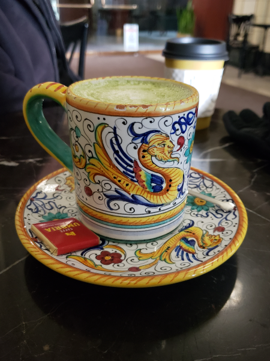

To date, some of my favorites are....
I love visiting new coffee shops (especially if they're cute or cozy). Since the beginning of last semester, I've spent almost every weekend scoping out a different coffee shop and taking pictures of the drinks and interior.
This is a cute mug from a coffee shop downtown called Caffe Umbria.

This lemon tart is from a cafe in Greektown called Artopolis.
Here are just a couple of the places that I've been to so far....
And here are some more that are still on my to-do list....